Página de referência técnica completa para transformar o blog em uma plataforma própria de portfólio, documentação, comunidade, newsletter, analytics, produtos digitais, área premium e laboratório prático de engenharia.
Base consolidada a partir das páginas 1 e 2 do PDF.
Visão geral
Esta página incorpora integralmente o PDF Documento técnico consolidado — Plataforma de Blog Técnico Pessoal, mantendo transcrição por página, tabelas, blocos de código, diagramas visuais e estrutura navegável.
O documento consolida uma plataforma que deixa de ser apenas um blog estático e passa a ser produto próprio de conteúdo técnico, portfólio público, painel administrativo, comunidade, newsletter, analytics, produtos digitais e área premium.
50Requisitos funcionais
28Requisitos não funcionais
8Fases de desenvolvimento
25Páginas incorporadas
ProdutoBlog técnico + portfólio + comunidade + newsletter + produtos digitais + área premium.
Stack principalNext.js, Java 21, Spring Boot, PostgreSQL, Redis, Object Storage e Vercel.
AbordagemMonólito modular evolutivo com fronteiras por domínio e deploy separado de frontend/backend.
Planejamento8 fases com MVP, comunidade, monetização, IA, escala e lançamento final.
1. Visão de produto e Lean Canvas
Produto
A plataforma documenta estudos, aprendizados, decisões de arquitetura e projetos de um desenvolvedor, transformando o processo de aprendizagem em ativo público. Também funciona como laboratório prático para backend, frontend, cloud, DevOps, segurança, dados e IA.
Objetivo principal
Criar uma plataforma pública e própria para publicar conteúdo técnico, demonstrar evolução profissional, registrar projetos e construir autoridade técnica com controle de SEO, dados e monetização.
Resultado esperado
Um produto real em produção, com código versionado, arquitetura documentada, conteúdo publicado, painel admin, analytics, newsletter e base para produtos digitais.
Lean Canvas resumido
Campo
Conteúdo
Problema
Conteúdo técnico pessoal disperso em plataformas de terceiros, sem controle de dados, audiência e monetização.
Segmento
Desenvolvedores em evolução, recrutadores, clientes e compradores de conteúdo técnico.
Proposta de valor
Plataforma própria que une blog técnico, portfólio, newsletter, comunidade e monetização.
Solução
Blog + CMS próprio + admin + comentários + analytics + produtos digitais + área premium.
Canais
SEO orgânico, redes sociais, newsletter, RSS, GitHub e LinkedIn.
Métricas-chave
Posts/mês, assinantes, pageviews, conversões, receita, comentários e backlinks.
Receita
Produtos digitais, assinatura premium, consultoria e oportunidades via portfólio.
Vantagem injusta
Marca pessoal + histórico técnico público + projeto desenvolvido e documentado em público.
Premissas e restrições
O autor é o único administrador no MVP; não há multi-tenancy inicialmente.
Volume inicial estimado: 0 a 50.000 pageviews/mês.
Conteúdo principal em português brasileiro, com arquitetura preparada para i18n futura.
A stack do MVP deve ser mantida durante o desenvolvimento para evitar troca prematura.
A documentação deve ser versionada com CHANGELOG.md e ADRs.
OKRs sugeridos para 12 meses
Objetivo
Métrica
Meta
Publicar conteúdo técnico
Posts publicados
>= 24 posts
Construir audiência
Assinantes confirmados
>= 500
Gerar tráfego orgânico
Pageviews mensais
>= 10.000/mês
Monetizar
Receita com produtos digitais
>= R$ 1.000/mês
Autoridade técnica
Backlinks externos
>= 20 domínios referenciadores
2. Stack completa recomendada
Stack
A stack equilibra valor de portfólio, produtividade, robustez e compatibilidade com vagas Java/Spring modernas.
Cobertura, duplicação, code smells e quality gate.
Trivy
Docker
Scan de vulnerabilidades em imagens.
Dependabot
Repositórios
PRs automáticos de patch/minor.
Política de atualização de dependências
Patch: atualizar imediatamente quando envolver segurança ou bugfix.
Minor: avaliar mensalmente.
Major: avaliar trimestralmente com branch e testes completos.
Java 21 Virtual Threads
Virtual Threads são uma decisão estratégica para manter o modelo imperativo do Spring MVC com melhor concorrência, sem exigir WebFlux para a maioria dos cenários.
A plataforma usa frontend e backend separados, comunicando via API REST versionada. O frontend é otimizado para SEO, cache e experiência de leitura; o backend concentra regras de negócio, segurança, persistência, eventos internos, integrações e administração.
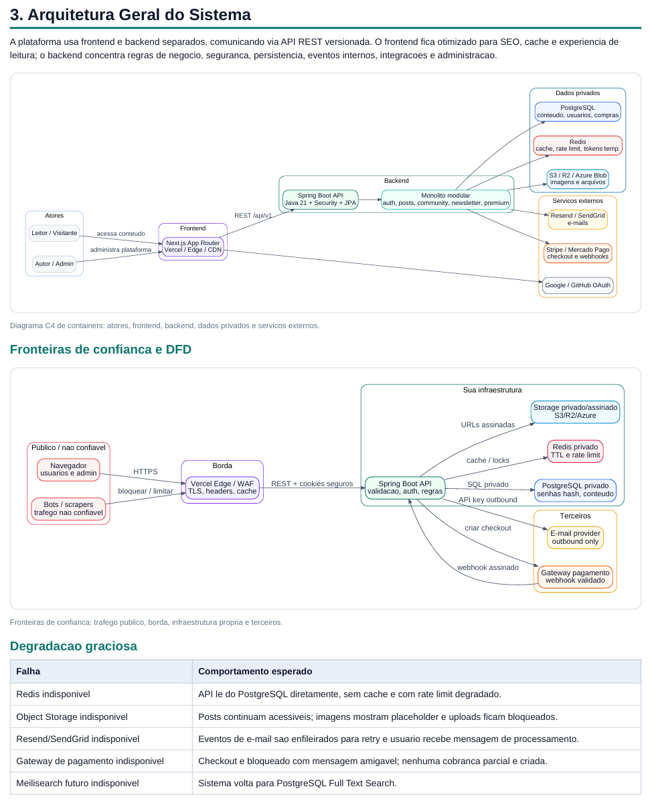
Visual original da página 5 do PDF.
Degradação graciosa
Falha
Comportamento esperado
Redis indisponível
API lê do PostgreSQL diretamente, sem cache e com rate limit degradado.
Object Storage indisponível
Posts continuam acessíveis; imagens mostram placeholder e uploads ficam bloqueados.
Resend/SendGrid indisponível
Eventos de e-mail são enfileirados para retry e usuário recebe mensagem de processamento.
Gateway de pagamento indisponível
Checkout é bloqueado com mensagem amigável; nenhuma cobrança parcial é criada.
Meilisearch futuro indisponível
Sistema volta para PostgreSQL Full Text Search.
Notas preservadas do PDF
Atores:
- Leitor / Visitante acessa conteúdo.
- Autor / Admin administra plataforma.
- Frontend: Next.js App Router, Vercel / Edge / CDN.
- Backend: Spring Boot API, Java 21 + Security + JPA, REST /api/v1.
- Dados privados: PostgreSQL, Redis, S3/R2/Azure Blob.
- Serviços externos: Resend / SendGrid, Stripe / Mercado Pago, Google / GitHub OAuth.
Fronteiras de confiança:
- Público / não confiável: navegador, usuários, admin, bots e scrapers.
- Borda: Vercel Edge / WAF, TLS, headers e cache.
- Sua infraestrutura: Spring Boot API, PostgreSQL privado, Redis privado, storage privado/assinado.
- Terceiros: e-mail provider e gateway de pagamento com webhook validado.
4. Monólito modular
Arquitetura
O projeto deve iniciar como monólito modular. Essa abordagem reduz custo operacional e complexidade, mas preserva separação por domínio e permite extração futura de serviços caso o produto cresça.
Quando reavaliar microserviços
Volume acima de 1 milhão de pageviews/mês e escala vertical antieconômica.
Módulo de pagamentos exigindo time dedicado e deploy próprio.
Dois módulos com ciclos de deploy independentes e conflitantes.
Tempo de build acima de 15 minutos.
Comunicação entre módulos
Situação
Mecanismo
Exemplo
Operação síncrona no mesmo request
Chamada via interface/port
PostService consulta UserReadPort.
Efeito colateral assíncrono
Spring ApplicationEvent
PostPublishedEvent dispara indexação e e-mail.
Comunicação que pode falhar
Evento + retry
Envio de e-mail e webhook externo.
Anti-Corruption Layer entre módulos
Módulos não devem expor entidades JPA uns aos outros. O consumo deve ocorrer por portas, DTOs ou eventos.
public interface PostReadPort {
PostSummary findBySlug(String slug);
List<PostSummary> findPublished(Pageable pageable);
}
// Analytics consome PostReadPort, mas nunca conhece a entidade JPA Post.
O frontend em Next.js deve priorizar SEO, performance, legibilidade, acessibilidade e experiência de administração. Rotas públicas usam SSG/ISR; áreas privadas usam SSR/CSR conforme necessidade.
Receber HTTP, validar DTOs, retornar response e status corretos.
service
Orquestrar regras de negócio, transações e eventos.
repository
Acesso a dados via Spring Data JPA e queries customizadas.
entity
Representação persistente do domínio no banco.
dto/request/response
Contratos de entrada e saída da API.
mapper
MapStruct para converter entity <-> DTO.
event
Eventos de domínio e integração intra-processo.
validator
Validações customizadas, como UniqueEmail e UniqueSlug.
Tratamento global de exceções
Exceção
HTTP
Uso
NotFoundException
404
Recurso não encontrado.
ConflictException
409
Slug ou e-mail duplicado.
ForbiddenException
403
Role insuficiente.
UnprocessableEntityException
422
Regra de negócio violada.
ExternalServiceException
503
Stripe, Resend ou storage indisponível.
7. Autenticação, autorização e segurança
Security
A estratégia recomendada usa access token de curta duração, refresh token rotativo em cookie HttpOnly, detecção de reuso, roles e permissões por método.
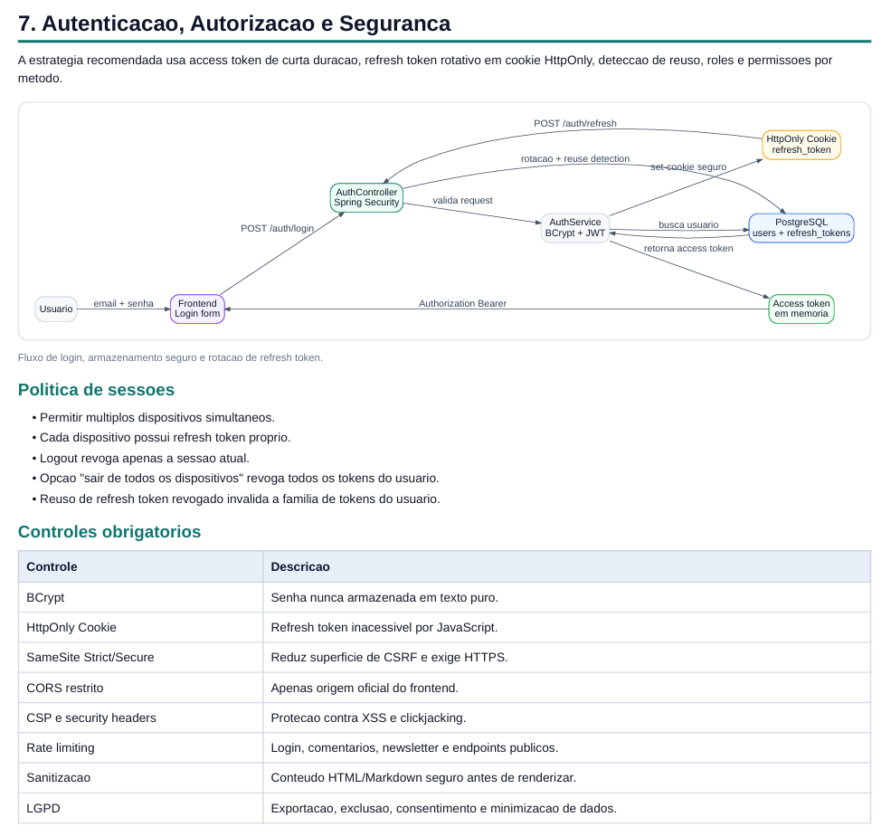
Visual original da página 9 do PDF.
Política de sessões
Permitir múltiplos dispositivos simultâneos.
Cada dispositivo possui refresh token próprio.
Logout revoga apenas a sessão atual.
Opção “sair de todos os dispositivos” revoga todos os tokens do usuário.
Reuso de refresh token revogado invalida a família de tokens do usuário.
Controles obrigatórios
Controle
Descrição
BCrypt
Senha nunca armazenada em texto puro.
HttpOnly Cookie
Refresh token inacessível por JavaScript.
SameSite Strict/Secure
Reduz superfície de CSRF e exige HTTPS.
CORS restrito
Apenas origem oficial do frontend.
CSP e security headers
Proteção contra XSS e clickjacking.
Rate limiting
Login, comentários, newsletter e endpoints públicos.
Sanitização
Conteúdo HTML/Markdown seguro antes de renderizar.
LGPD
Exportação, exclusão, consentimento e minimização de dados.
8. Conteúdo, publicação e uploads
Conteúdo
O fluxo editorial deve permitir escrita técnica com Markdown/MDX, assets otimizados, publicação agendada e propagação de eventos para cache, busca, newsletter e SEO.
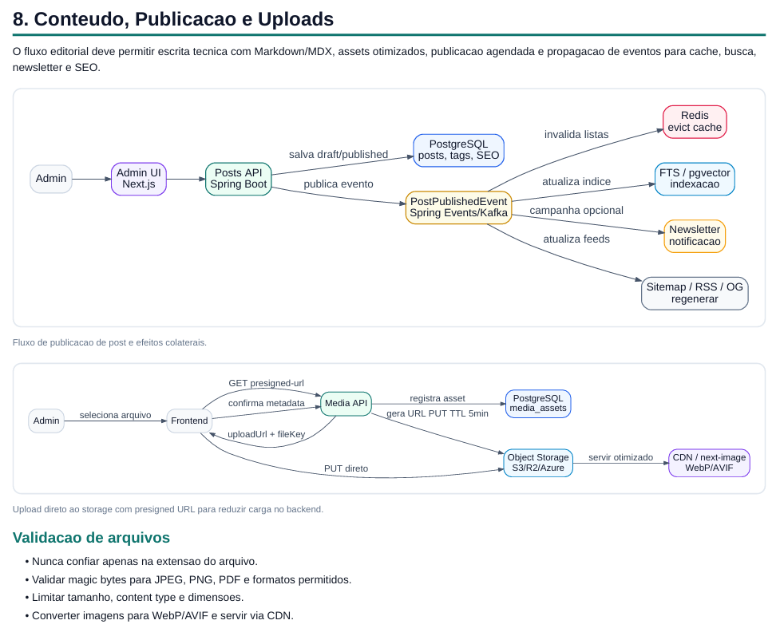
Visual original da página 10 do PDF.
Validação de arquivos
Nunca confiar apenas na extensão do arquivo.
Validar magic bytes para JPEG, PNG, PDF e formatos permitidos.
Limitar tamanho, content type e dimensões.
Converter imagens para WebP/AVIF e servir via CDN.
Fluxos preservados do PDF
Fluxo de publicação:
Admin UI -> Posts API -> PostgreSQL -> PostPublishedEvent -> Redis -> FTS/pgvector -> Newsletter -> Sitemap/RSS/OG.
Fluxo de upload:
Admin Frontend seleciona arquivo -> Media API gera presigned-url -> Object Storage recebe PUT direto S3/R2/Azure -> PostgreSQL registra media_assets -> CDN/next-image serve WebP/AVIF.
9. Banco de Dados e Modelo de Dados
PostgreSQL
PostgreSQL é o banco principal por oferecer maturidade, consultas relacionais, JSONB, Full Text Search, índices GIN, constraints fortes e extensões como pgvector em fases futuras.
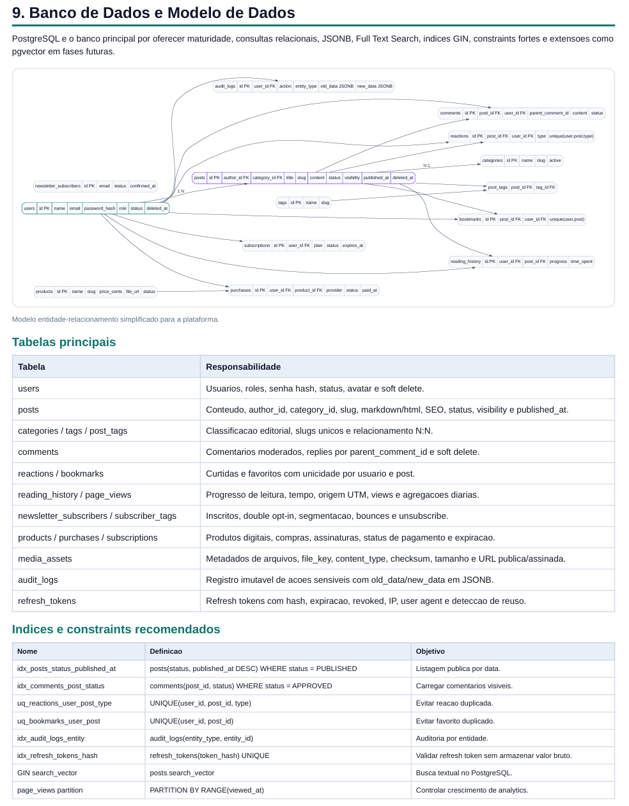
Visual original da página 11 do PDF.
Tabelas principais
Tabela
Responsabilidade
users
Usuários, roles, senha hash, status, avatar e soft delete.
posts
Conteúdo, author_id, category_id, slug, markdown/html, SEO, status, visibility e published_at.
categories / tags / post_tags
Classificação editorial, slugs únicos e relacionamento N:N.
comments
Comentários moderados, replies por parent_comment_id e soft delete.
reactions / bookmarks
Curtidas e favoritos com unicidade por usuário e post.
reading_history / page_views
Progresso de leitura, tempo, origem UTM, views e agregações diárias.
newsletter_subscribers / subscriber_tags
Inscritos, double opt-in, segmentação, bounces e unsubscribe.
products / purchases / subscriptions
Produtos digitais, compras, assinaturas, status de pagamento e expiração.
media_assets
Metadados de arquivos, file_key, content_type, checksum, tamanho e URL pública/assinada.
audit_logs
Registro imutável de ações sensíveis com old_data/new_data em JSONB.
refresh_tokens
Refresh tokens com hash, expiração, revoked, IP, user agent e detecção de reuso.
Índices e constraints recomendados
Nome
Definição
Objetivo
idx_posts_status_published_at
posts(status, published_at DESC) WHERE status = PUBLISHED
Listagem pública por data.
idx_comments_post_status
comments(post_id, status) WHERE status = APPROVED
Carregar comentários visíveis.
uq_reactions_user_post_type
UNIQUE(user_id, post_id, type)
Evitar reação duplicada.
uq_bookmarks_user_post
UNIQUE(user_id, post_id)
Evitar favorito duplicado.
idx_audit_logs_entity
audit_logs(entity_type, entity_id)
Auditoria por entidade.
idx_refresh_tokens_hash
refresh_tokens(token_hash) UNIQUE
Validar refresh token sem armazenar valor bruto.
GIN search_vector
posts.search_vector
Busca textual no PostgreSQL.
page_views partition
PARTITION BY RANGE(viewed_at)
Controlar crescimento de analytics.
Convenções de banco
Item
Padrão
Tabelas
snake_case no plural, como posts, users, audit_logs.
Colunas
snake_case.
PK
id UUID sempre que possível.
FK
{tabela_singular}_id, como post_id.
Índices
idx_{tabela}_{colunas}.
Constraints
uq_{tabela}_{coluna}, chk_{tabela}_{regra}.
Migrations
V{n}__descricao_com_underscores.sql.
10. API REST e Contratos
REST
A API deve seguir REST com versionamento por URL, padrão uniforme de erros, idempotência em operações críticas e documentação OpenAPI.
Domínio
Endpoints principais
Auth
POST /api/v1/auth/register, /login, /refresh, /logout, /forgot-password, /reset-password, GET /me
Posts públicos
GET /api/v1/posts, /posts/{slug}, /posts/featured, /posts/recent, /posts/search, /posts/{slug}/related
Posts admin
POST /api/v1/admin/posts, PUT /admin/posts/{id}, PATCH /publish, PATCH /archive, DELETE /admin/posts/{id}
Categorias e tags
GET /categories, GET /tags, POST/PUT/DELETE /api/v1/admin/categories, /api/v1/admin/tags
POST /newsletter/subscribe, /confirm, /unsubscribe, POST /admin/newsletter/campaigns/{id}/send
Produtos e premium
GET /products, GET /products/{slug}, POST /checkout, GET /me/purchases, GET /me/subscription
Pagamentos
POST /api/v1/webhooks/payments, POST /admin/purchases/{id}/refund
Uploads
GET /admin/uploads/presigned-url, POST /admin/uploads/confirm, DELETE /admin/uploads/{id}
Analytics/admin
POST /analytics/events, GET /admin/analytics/overview, /posts, /revenue, GET /admin/audit-logs, POST /admin/settings
Sistema
GET /health, GET /feed.xml, GET /sitemap.xml, GET /robots.txt
Padrão de erro — RFC 7807
{
"type": "https://api.seusite.com.br/errors/post-not-found",
"title": "Post nao encontrado",
"status": 404,
"detail": "Nenhum post com slug informado foi encontrado",
"instance": "/api/v1/posts/spring-boot-xyz",
"timestamp": "2026-05-22T10:30:00Z",
"traceId": "abc123def456"
}
Regras de API
Versionamento: /api/v1, com depreciação de 12 meses após uma v2.
Erros uniformes com traceId.
Idempotência em like, bookmark, subscribe e webhooks.
Paginação por cursor para grandes volumes.
Swagger/OpenAPI sempre atualizado no pipeline.
11. Cache, busca e performance
Redis
Redis deve ser usado para reduzir carga do banco, controlar taxa, armazenar locks temporários e acelerar leituras públicas. PostgreSQL Full Text Search atende o MVP; Meilisearch/OpenSearch entram somente se as métricas justificarem.
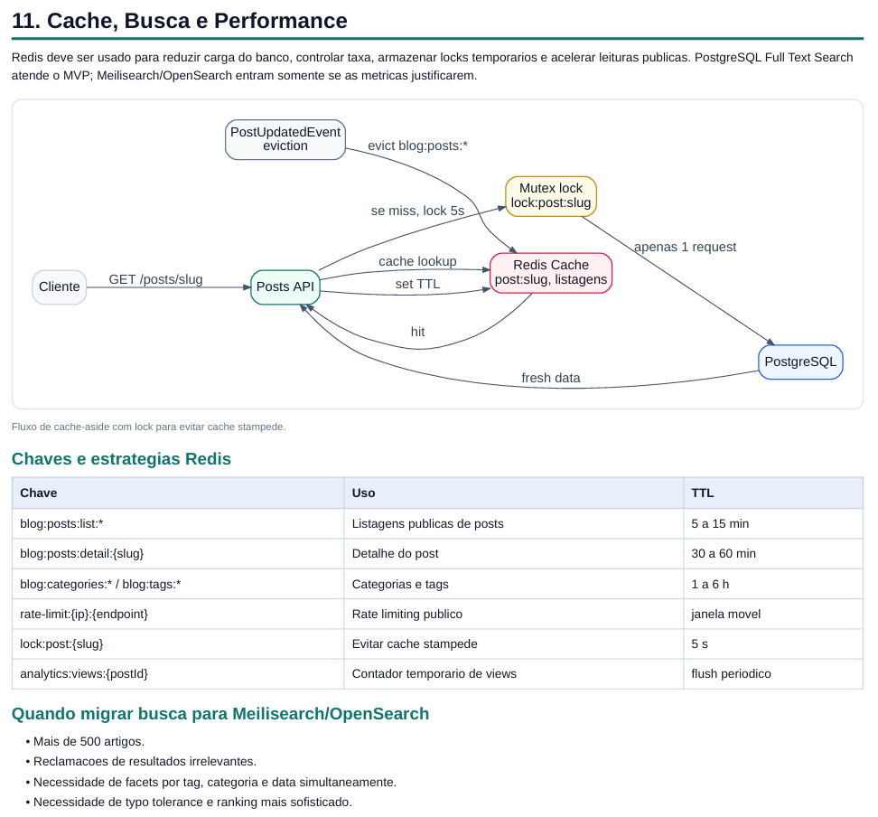
Visual original da página 14 do PDF.
Chaves e estratégias Redis
Chave
Uso
TTL
blog:posts:list:*
Listagens públicas de posts
5 a 15 min
blog:posts:detail:{slug}
Detalhe do post
30 a 60 min
blog:categories:* / blog:tags:*
Categorias e tags
1 a 6 h
rate-limit:{ip}:{endpoint}
Rate limiting público
janela móvel
lock:post:{slug}
Evitar cache stampede
5 s
analytics:views:{postId}
Contador temporário de views
flush periódico
Quando migrar busca para Meilisearch/OpenSearch
Mais de 500 artigos.
Reclamações de resultados irrelevantes.
Necessidade de facets por tag, categoria e data simultaneamente.
Necessidade de typo tolerance e ranking mais sofisticado.
12. DevOps, infraestrutura e deploy
CI/CD
O processo de entrega deve ter ambientes separados, quality gates automatizados, deploy verificável, rollback e migrations seguras.
Imagens devem ser servidas em WebP com srcset responsivo e CLS < 0.1.
Lighthouse CI
RNF26
Auditoria
Ações sensíveis do admin devem ser registradas em log de auditoria imutável.
Consulta audit_logs
RNF27
Resiliência
A API deve implementar Circuit Breaker para Stripe, Resend e serviços externos.
Resilience4j tests
RNF28
Internacionalização
Arquitetura deve suportar futura i18n sem refactoring estrutural.
Review de rotas/content
16. Processo de desenvolvimento em 8 fases
Roadmap
As fases abaixo foram extraídas da trilha do HTML anexado e adaptadas para o processo real de construção da plataforma. Cada fase possui foco, entregáveis do blog e critério de saída.
Incluir exportação, exclusão de conta, consentimento, minimização e políticas desde o início.
19. Mapa de conhecimento de engenharia coberto
Mapa
O projeto funciona como portfólio técnico porque cobre várias competências de engenharia moderna. Cada módulo implementado pode virar artigo, estudo de caso ou demonstração em entrevista.
Newsletter, funis, produtos digitais, área premium, pagamentos, analytics.
Média
Conclusão
Se construída e documentada com consistência, esta plataforma cobre praticamente toda a trilha de um desenvolvedor backend forte com base full stack, cloud, DevOps, segurança, dados, produto e IA aplicada.
Transcrição completa do PDF por página
25 páginas
Esta seção preserva o conteúdo página por página. Cada bloco contém a transcrição textual extraída do PDF e o visual original renderizado em imagem WebP incorporada no próprio HTML.
Página 1
Transcrição integral + visual original
Transcrição da página 1
Documento tecnico consolidado
Plataforma de Blog Tecnico Pessoal
Arquitetura completa, requisitos funcionais e nao funcionais, modelo de dados, seguranca,
infraestrutura, diagramas e processo de desenvolvimento em fases.
PRODUTO
Blog tecnico + portfolio + comunidade + newsletter + produtos
digitais + area premium
STACK PRINCIPAL
Next.js, Java 21, Spring Boot, PostgreSQL, Redis, Object
Storage e Vercel
ABORDAGEM
Monolito modular evolutivo, com fronteiras por dominio e
deploy separado de frontend/backend
PLANEJAMENTO
8 fases de desenvolvimento, com MVP, comunidade,
monetizacao, IA, escala e lancamento final
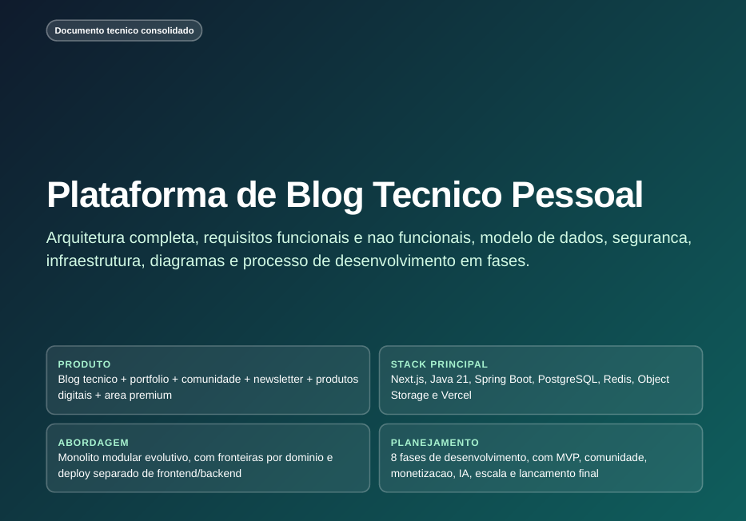
Visual original da página 1 do PDF.
Página 2
Transcrição integral + visual original
Transcrição da página 2
Sumario Executivo
Este PDF consolida a documentacao tecnica do projeto em uma unica especificacao. A plataforma deixa de ser apenas um blog estatico e passa a ser um
produto proprio de conteudo tecnico, portifolio publico, painel administrativo, comunidade, newsletter, analytics, produtos digitais e area premium.
50
REQUISITOS FUNCIONAIS
28
REQUISITOS NAO FUNCIONAIS
8
FASES DE DESENVOLVIMENTO
Decisao central: iniciar como monolito modular com backend Java/Spring e frontend Next.js. Microservicos so devem ser considerados se houver
escala, times independentes, ciclos de deploy conflitantes ou custo de escala vertical alto.
Sumario Navegavel do Documento
1. Visao de produto e Lean Canvas
2. Premissas, restricoes e criterio de sucesso
3. Stack completa recomendada
4. Arquitetura geral e diagramas
5. Monolito modular e modulos
6. Frontend Next.js
7. Backend Java/Spring
8. Banco de dados PostgreSQL
9. API REST e contratos
10. Segurança, autenticação e LGPD
11. Cache, storage e performance
12. DevOps, CI/CD e deploy
13. Observabilidade e testes
14. Requisitos funcionais
15. Requisitos nao funcionais
16. Fases de desenvolvimento
17. Riscos, melhorias e conhecimento coberto
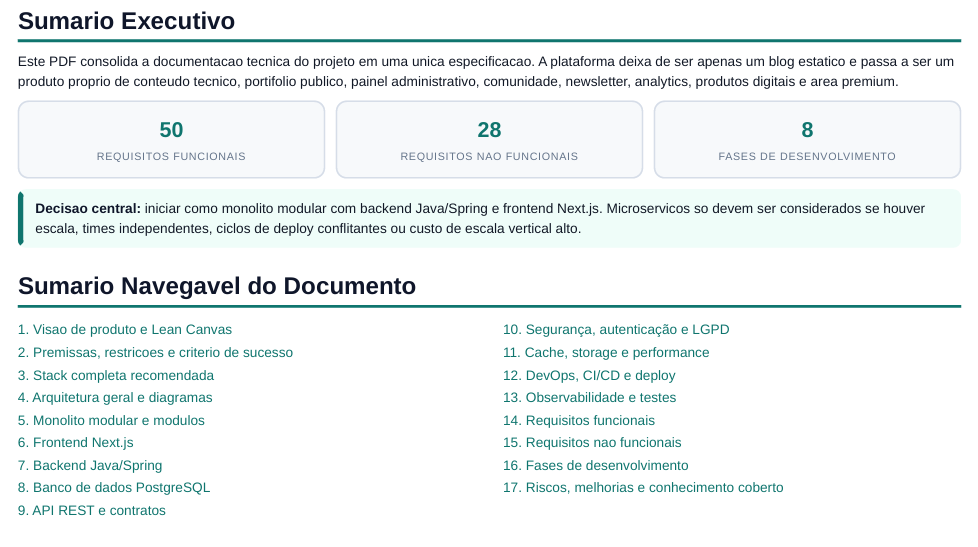
Visual original da página 2 do PDF.
Página 3
Transcrição integral + visual original
Transcrição da página 3
1. Visao de Produto
A plataforma tem como objetivo documentar estudos, aprendizados, decisoes de arquitetura e projetos de um desenvolvedor, transformando o processo de
aprendizagem em ativo publico. O projeto tambem serve como laboratorio pratico para tecnologias modernas de backend, frontend, cloud, DevOps,
seguranca, dados e IA.
Objetivo principal
Criar uma plataforma publica e propria para publicar conteudo tecnico,
demonstrar evolucao profissional, registrar projetos e construir
autoridade tecnica com controle de SEO, dados e monetizacao.
Resultado esperado
Um produto real em producao, com codigo versionado, arquitetura
documentada, conteudo publicado, painel admin, analytics, newsletter
e base para produtos digitais.
Lean Canvas resumido
Campo
Conteudo
Problema
Conteudo tecnico pessoal disperso em plataformas de terceiros, sem controle de dados, audiencia e monetizacao.
Segmento
Desenvolvedores em evolucao, recrutadores, clientes e compradores de conteudo tecnico.
Proposta de valor
Plataforma propria que une blog tecnico, portfolio, newsletter, comunidade e monetizacao.
Solucao
Blog + CMS proprio + admin + comentarios + analytics + produtos digitais + area premium.
Canais
SEO organico, redes sociais, newsletter, RSS, GitHub e LinkedIn.
Metricas-chave
Posts/mes, assinantes, pageviews, conversoes, receita, comentarios e backlinks.
Receita
Produtos digitais, assinatura premium, consultoria e oportunidades via portfolio.
Vantagem injusta
Marca pessoal + historico tecnico publico + projeto desenvolvido e documentado em publico.
Premissas e restricoes
O autor e o unico administrador no MVP; nao ha multi-tenancy inicialmente.
Volume inicial estimado: 0 a 50.000 pageviews/mes.
Conteudo principal em portugues brasileiro, com arquitetura preparada para i18n futura.
A stack do MVP deve ser mantida durante o desenvolvimento para evitar troca prematura.
A documentacao deve ser versionada com CHANGELOG.md e ADRs.
OKRs sugeridos para 12 meses
Objetivo
Metrica
Meta
Publicar conteudo tecnico
Posts publicados
>= 24 posts
Construir audiencia
Assinantes confirmados
>= 500
Gerar trafego organico
Pageviews mensais
>= 10.000/mes
Monetizar
Receita com produtos digitais
>= R$ 1.000/mes
Autoridade tecnica
Backlinks externos
>= 20 dominios referenciadores
•
•
•
•
•
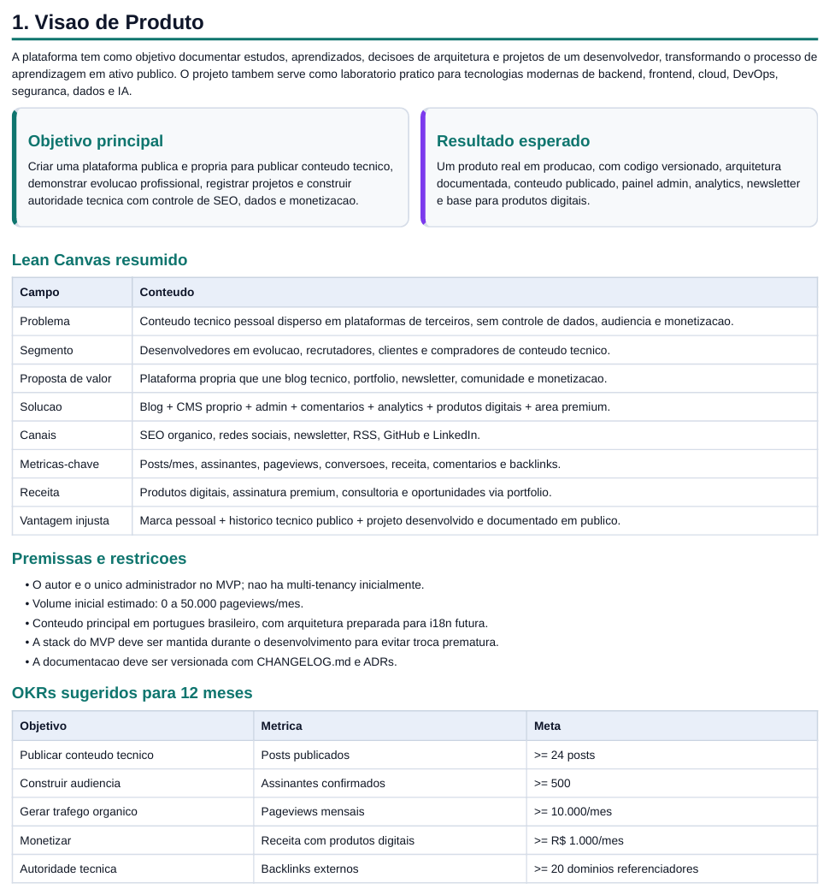
Visual original da página 3 do PDF.
Página 4
Transcrição integral + visual original
Transcrição da página 4
2. Stack Completa Recomendada
A stack foi escolhida para equilibrar valor de portifolio, produtividade, robustez e compatibilidade com vagas Java/Spring modernas.
Camada
Tecnologias e decisao
Frontend
Next.js App Router, TypeScript, Tailwind CSS, shadcn/ui, React Hook Form, Zod, TanStack Query, Zustand.
Backend
Java 21, Spring Boot 3, Spring Security 6, Spring Data JPA, Bean Validation, MapStruct, Resilience4j.
Banco
PostgreSQL com UUID, JSONB, FTS, indices parciais, constraints, particionamento e Flyway.
Cache
Redis para cache-aside, TTLs, rate limiting, locks, contadores e tokens temporarios.
Storage
S3/R2/Azure Blob para imagens, anexos e arquivos privados com presigned URLs.
Observabilidade
Actuator, Micrometer, logs JSON, traceId, Sentry, Prometheus/Grafana e Uptime Robot.
DevOps
Docker, Docker Compose, GitHub Actions, Trivy, SonarQube, staging, zero-downtime deploy.
Qualidade
JUnit 5, Mockito, Testcontainers, RestAssured, WireMock, Playwright, k6, Checkstyle, PMD, SpotBugs.
Ferramentas obrigatorias de qualidade
Ferramenta
Categoria
Proposito
Checkstyle + PMD
Backend
Linting e analise estatica Java.
SpotBugs
Backend
Deteccao de bugs em tempo de analise.
ESLint + Prettier
Frontend
Lint e formatacao TypeScript.
Husky + lint-staged
Ambos
Pre-commit hooks.
SonarQube Community
Ambos
Cobertura, duplicacao, code smells e quality gate.
Trivy
Docker
Scan de vulnerabilidades em imagens.
Dependabot
Repositorios
PRs automaticos de patch/minor.
Politica de atualizacao de dependencias
Patch: atualizar imediatamente quando envolver seguranca ou bugfix.
Minor: avaliar mensalmente.
Major: avaliar trimestralmente com branch e testes completos.
Java 21 Virtual Threads
Virtual Threads sao uma decisao estrategica para manter o modelo imperativo do Spring MVC com melhor concorrencia, sem exigir WebFlux para a
maioria dos cenarios.
spring:
threads:
virtual:
enabled: true
management:
endpoint:
health:
probes:
enabled: true
health:
livenessstate:
enabled: true
readinessstate:
enabled: true
•
•
•
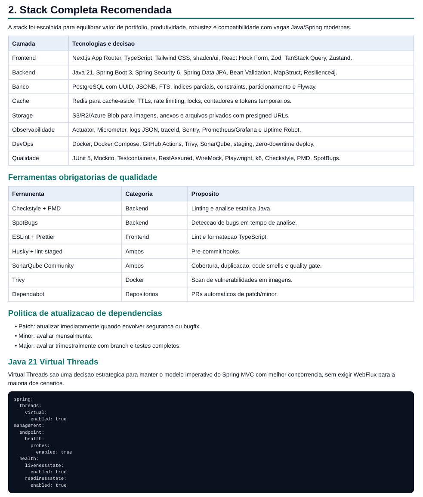
Visual original da página 4 do PDF.
Página 5
Transcrição integral + visual original
Transcrição da página 5
3. Arquitetura Geral do Sistema
A plataforma usa frontend e backend separados, comunicando via API REST versionada. O frontend fica otimizado para SEO, cache e experiencia de
leitura; o backend concentra regras de negocio, seguranca, persistencia, eventos internos, integracoes e administracao.
Diagrama C4 de containers: atores, frontend, backend, dados privados e servicos externos.
Fronteiras de confianca e DFD
Fronteiras de confianca: trafego publico, borda, infraestrutura propria e terceiros.
Degradacao graciosa
Falha
Comportamento esperado
Redis indisponivel
API le do PostgreSQL diretamente, sem cache e com rate limit degradado.
Object Storage indisponivel
Posts continuam acessiveis; imagens mostram placeholder e uploads ficam bloqueados.
Resend/SendGrid indisponivel
Eventos de e-mail sao enfileirados para retry e usuario recebe mensagem de processamento.
Gateway de pagamento indisponivel
Checkout e bloqueado com mensagem amigavel; nenhuma cobranca parcial e criada.
Meilisearch futuro indisponivel
Sistema volta para PostgreSQL Full Text Search.
Atores
Frontend
Backend
Dados privados
Servicos externos
Leitor / Visitante
Next.js App Router
Vercel / Edge / CDN
acessa conteudo
Autor / Admin
administra plataforma
Spring Boot API
Java 21 + Security + JPA
REST /api/v1
Google / GitHub OAuth
Monolito modular
auth, posts, community, newsletter, premium
PostgreSQL
conteudo, usuarios, compras
Redis
cache, rate limit, tokens temp.
S3 / R2 / Azure Blob
imagens e arquivos
Resend / SendGrid
e-mails
Stripe / Mercado Pago
checkout e webhooks
Publico / nao confiavel
Borda
Sua infraestrutura
Terceiros
Navegador
usuarios e admin
Vercel Edge / WAF
TLS, headers, cache
HTTPS
Bots / scrapers
trafego nao confiavel
bloquear / limitar
Spring Boot API
validacao, auth, regras
REST + cookies seguros
PostgreSQL privado
senhas hash, conteudo
SQL privado
Redis privado
TTL e rate limit
cache / locks
Storage privado/assinado
S3/R2/Azure
URLs assinadas
E-mail provider
outbound only
API key outbound
Gateway pagamento
webhook validado
criar checkout
webhook assinado
Visual original da página 5 do PDF.
Página 6
Transcrição integral + visual original
Transcrição da página 6
4. Monolito Modular
O projeto deve iniciar como monolito modular. Esta abordagem reduz custo operacional e complexidade, mas preserva separacao por dominio, permitindo
extracao futura de servicos caso o produto cresca.
Dependencias entre modulos. A regra e manter dependencias unidirecionais e evitar entidade JPA atravessando fronteiras.
Quando reavaliar microservicos
Volume acima de 1 milhao de pageviews/mes e escala vertical antieconomica.
Modulo de pagamentos exigindo time dedicado e deploy proprio.
Dois modulos com ciclos de deploy independentes e conflitantes.
Tempo de build acima de 15 minutos.
Comunicacao entre modulos
Situacao
Mecanismo
Exemplo
Operacao sincronica no mesmo request
Chamada via interface/port
PostService consulta UserReadPort.
Efeito colateral assincrono
Spring ApplicationEvent
PostPublishedEvent dispara indexacao e e-mail.
Comunicacao que pode falhar
Evento + retry
Envio de e-mail e webhook externo.
Anti-Corruption Layer entre modulos
Modulos nao devem expor entidades JPA uns aos outros. O consumo deve ocorrer por portas, DTOs ou eventos.
public interface PostReadPort {
PostSummary findBySlug(String slug);
List<PostSummary> findPublished(Pageable pageable);
}
// Analytics consome PostReadPort, mas nunca conhece a entidade JPA Post.
auth
login, JWT, refresh
users
perfil, roles, status
posts
conteudo, SEO, series
media
upload, presigned URLs
community
comments, likes, favorites
newsletter
subscribers, campaigns
analytics
views, UTM, leitura
premium
assinaturas, acesso
products
digitais, downloads
payments
checkout, webhooks
notifications
e-mail, in-app
settings
feature flags, manutencao
audit
acoes sensiveis
•
•
•
•
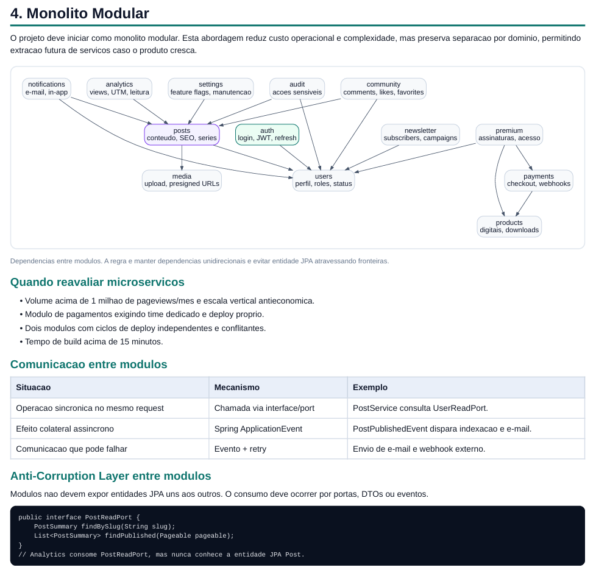
Visual original da página 6 do PDF.
Página 7
Transcrição integral + visual original
Transcrição da página 7
5. Arquitetura Frontend
O frontend em Next.js deve priorizar SEO, performance, legibilidade, acessibilidade e experiencia de administracao. Rotas publicas usam SSG/ISR; areas
privadas usam SSR/CSR conforme necessidade.
Estrutura de pastas
blog-platform-web/
├── app/
│ ├── (public)/blog, projetos, series, produtos
│ ├── (auth)/login, cadastro, reset-password
│ ├── (private)/me, dashboard
│ ├── admin/posts, users, analytics, settings
│ ├── sitemap.ts, robots.ts, api/og/route.tsx
│ └── middleware.ts
├── components/
│ ├── layout, blog, comments, admin, forms, ui
├── services/ # clients REST por dominio
├── lib/ # auth, api, seo, utils
├── store/ # auth em memoria, tema, UI state
├── config/ # site, navigation, features
└── types/ # contratos frontend
Estrategia de renderizacao por rota
Rota
Estrategia
Justificativa
/blog
ISR - revalidate 300s
Lista muda com novos posts, mas precisa manter performance.
/blog/[slug]
SSG + ISR - revalidate 3600s
SEO critico e conteudo pouco alterado.
/projetos
SSG
Portfolio muda com baixa frequencia.
/admin/*
CSR
Rotas privadas, nao indexaveis e altamente interativas.
/me/*
SSR com auth check
Dados personalizados do usuario autenticado.
/api/og
Route Handler
Gerar Open Graph image dinamica por post.
Componentes principais
Dominio
Componentes
Layout
Header, Footer, Sidebar, Breadcrumb, Command Search, Theme Toggle.
Blog
PostCard, PostHeader, PostContent, TableOfContents, RelatedPosts, ShareButtons.
Comentarios
CommentList, CommentForm, ModerationBadge, ReplyThread.
Admin
PostEditor, MediaUploader, AnalyticsCards, UserTable, SettingsPanel.
SEO
JsonLd, OgImage, Canonical, BreadcrumbSchema.
Error boundaries e middleware
O frontend deve usar error.tsx, not-found.tsx, boundaries por grupo de rota e middleware.ts para proteger /admin e /me.
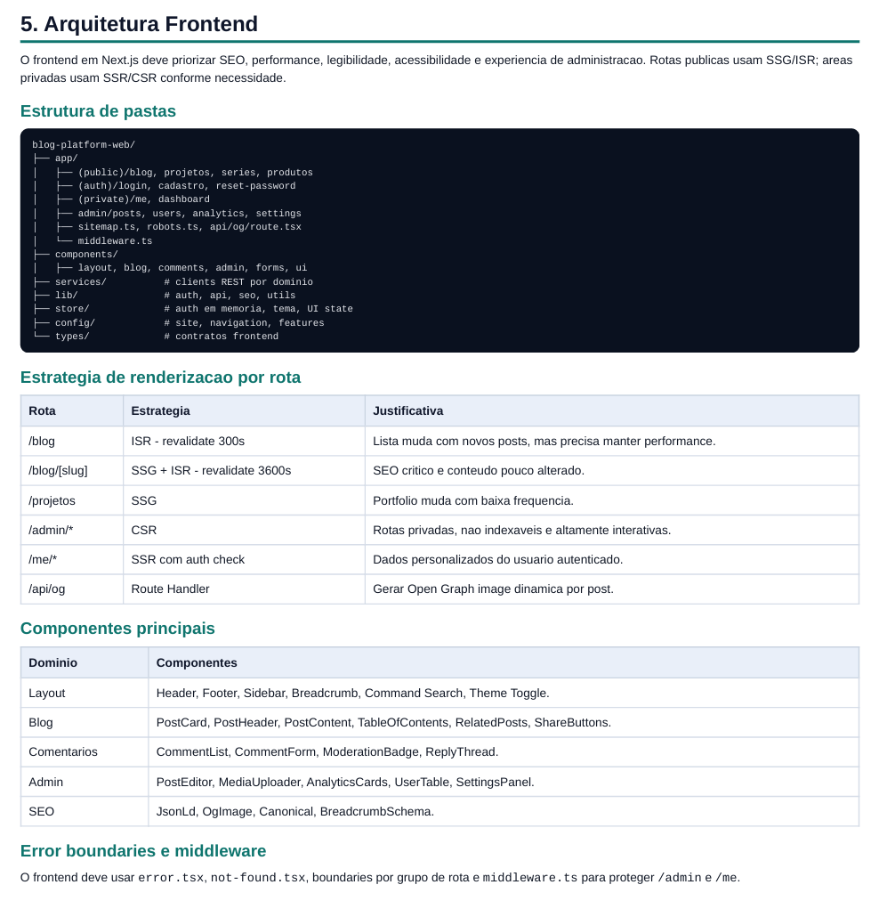
Visual original da página 7 do PDF.
Página 8
Transcrição integral + visual original
Transcrição da página 8
6. Arquitetura Backend
O backend Spring Boot concentra regras de negocio, seguranca, persistencia, moderacao, integracoes externas, analytics, pagamentos e administracao.
Estrutura de modulos e pacotes
blog-platform-api/
├── auth/ # login, JWT, refresh token, password reset
├── users/ # perfil, roles, status, LGPD
├── posts/ # posts, categorias, tags, series, SEO
├── community/ # comentarios, curtidas, favoritos
├── newsletter/ # subscribers, campaigns, bounces
├── analytics/ # page views, UTM, leitura, funis
├── media/ # upload, presigned URLs, assets
├── products/ # produtos digitais, arquivos, precos
├── payments/ # checkout, webhooks, reembolsos
├── premium/ # assinaturas e controle de acesso
├── notifications/ # e-mail e notificacoes internas
├── settings/ # feature flags e manutencao
└── shared/ # exceptions, security, events, validation, utils
Camadas padrao por modulo
Camada
Responsabilidade
controller
Receber HTTP, validar DTOs, retornar response e status corretos.
service
Orquestrar regras de negocio, transacoes e eventos.
repository
Acesso a dados via Spring Data JPA e queries customizadas.
entity
Representacao persistente do dominio no banco.
dto/request/response
Contratos de entrada e saida da API.
mapper
MapStruct para converter entity <-> DTO.
event
Eventos de dominio e integracao intra-processo.
validator
Validacoes customizadas, como UniqueEmail e UniqueSlug.
Tratamento global de excecoes
Excecao
HTTP
Uso
NotFoundException
404
Recurso nao encontrado.
ConflictException
409
Slug ou e-mail duplicado.
ForbiddenException
403
Role insuficiente.
UnprocessableEntityException
422
Regra de negocio violada.
ExternalServiceException
503
Stripe, Resend ou storage indisponivel.
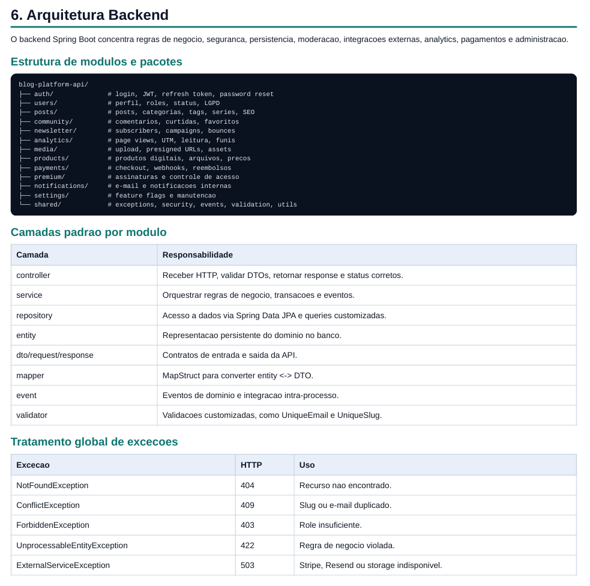
Visual original da página 8 do PDF.
Página 9
Transcrição integral + visual original
Transcrição da página 9
7. Autenticacao, Autorizacao e Seguranca
A estrategia recomendada usa access token de curta duracao, refresh token rotativo em cookie HttpOnly, deteccao de reuso, roles e permissoes por
metodo.
Fluxo de login, armazenamento seguro e rotacao de refresh token.
Politica de sessoes
Permitir multiplos dispositivos simultaneos.
Cada dispositivo possui refresh token proprio.
Logout revoga apenas a sessao atual.
Opcao "sair de todos os dispositivos" revoga todos os tokens do usuario.
Reuso de refresh token revogado invalida a familia de tokens do usuario.
Controles obrigatorios
Controle
Descricao
BCrypt
Senha nunca armazenada em texto puro.
HttpOnly Cookie
Refresh token inacessivel por JavaScript.
SameSite Strict/Secure
Reduz superficie de CSRF e exige HTTPS.
CORS restrito
Apenas origem oficial do frontend.
CSP e security headers
Protecao contra XSS e clickjacking.
Rate limiting
Login, comentarios, newsletter e endpoints publicos.
Sanitizacao
Conteudo HTML/Markdown seguro antes de renderizar.
LGPD
Exportacao, exclusao, consentimento e minimizacao de dados.
Usuario
Frontend
Login form
email + senha
AuthController
Spring Security
POST /auth/login
AuthService
BCrypt + JWT
valida request
PostgreSQL
users + refresh_tokens
rotacao + reuse detection
busca usuario
HttpOnly Cookie
refresh_token
set-cookie seguro
Access token
em memoria
retorna access token
POST /auth/refresh
Authorization Bearer
•
•
•
•
•
Visual original da página 9 do PDF.
Página 10
Transcrição integral + visual original
Transcrição da página 10
8. Conteudo, Publicacao e Uploads
O fluxo editorial deve permitir escrita tecnica com Markdown/MDX, assets otimizados, publicacao agendada e propagacao de eventos para cache, busca,
newsletter e SEO.
Fluxo de publicacao de post e efeitos colaterais.
Upload direto ao storage com presigned URL para reduzir carga no backend.
Validacao de arquivos
Nunca confiar apenas na extensao do arquivo.
Validar magic bytes para JPEG, PNG, PDF e formatos permitidos.
Limitar tamanho, content type e dimensoes.
Converter imagens para WebP/AVIF e servir via CDN.
Admin
Admin UI
Next.js
Posts API
Spring Boot
PostgreSQL
posts, tags, SEO
salva draft/published
PostPublishedEvent
Spring Events/Kafka
publica evento
Redis
evict cache
invalida listas
FTS / pgvector
indexacao
atualiza indice
Newsletter
notificacao
campanha opcional
Sitemap / RSS / OG
regenerar
atualiza feeds
Admin
Frontend
seleciona arquivo
Media API
GET presigned-url
confirma metadata
Object Storage
S3/R2/Azure
PUT direto
uploadUrl + fileKey
gera URL PUT TTL 5min
PostgreSQL
media_assets
registra asset
CDN / next-image
WebP/AVIF
servir otimizado
•
•
•
•
Visual original da página 10 do PDF.
Página 11
Transcrição integral + visual original
Transcrição da página 11
9. Banco de Dados e Modelo de Dados
PostgreSQL e o banco principal por oferecer maturidade, consultas relacionais, JSONB, Full Text Search, indices GIN, constraints fortes e extensoes como
pgvector em fases futuras.
Modelo entidade-relacionamento simplificado para a plataforma.
Tabelas principais
Tabela
Responsabilidade
users
Usuarios, roles, senha hash, status, avatar e soft delete.
posts
Conteudo, author_id, category_id, slug, markdown/html, SEO, status, visibility e published_at.
categories / tags / post_tags
Classificacao editorial, slugs unicos e relacionamento N:N.
comments
Comentarios moderados, replies por parent_comment_id e soft delete.
reactions / bookmarks
Curtidas e favoritos com unicidade por usuario e post.
reading_history / page_views
Progresso de leitura, tempo, origem UTM, views e agregacoes diarias.
newsletter_subscribers / subscriber_tags
Inscritos, double opt-in, segmentacao, bounces e unsubscribe.
products / purchases / subscriptions
Produtos digitais, compras, assinaturas, status de pagamento e expiracao.
media_assets
Metadados de arquivos, file_key, content_type, checksum, tamanho e URL publica/assinada.
audit_logs
Registro imutavel de acoes sensiveis com old_data/new_data em JSONB.
refresh_tokens
Refresh tokens com hash, expiracao, revoked, IP, user agent e deteccao de reuso.
Indices e constraints recomendados
Nome
Definicao
Objetivo
idx_posts_status_published_at
posts(status, published_at DESC) WHERE status = PUBLISHED
Listagem publica por data.
idx_comments_post_status
comments(post_id, status) WHERE status = APPROVED
Carregar comentarios visiveis.
uq_reactions_user_post_type
UNIQUE(user_id, post_id, type)
Evitar reacao duplicada.
uq_bookmarks_user_post
UNIQUE(user_id, post_id)
Evitar favorito duplicado.
idx_audit_logs_entity
audit_logs(entity_type, entity_id)
Auditoria por entidade.
idx_refresh_tokens_hash
refresh_tokens(token_hash) UNIQUE
Validar refresh token sem armazenar valor bruto.
GIN search_vector
posts.search_vector
Busca textual no PostgreSQL.
page_views partition
PARTITION BY RANGE(viewed_at)
Controlar crescimento de analytics.
users
id PK
name
email
password_hash
role
status
deleted_at
posts
id PK
author_id FK
category_id FK
title
slug
content
status
visibility
published_at
deleted_at
1:N
comments
id PK
post_id FK
user_id FK
parent_comment_id
content
status
reactions
id PK
post_id FK
user_id FK
type unique(user,post,type)
bookmarks
id PK
post_id FK
user_id FK unique(user,post)
reading_history
id PK
user_id FK
post_id FK
progress
time_spent
purchases
id PK
user_id FK
product_id FK
provider
status
paid_at
subscriptions
id PK
user_id FK
plan
status
expires_at
audit_logs
id PK
user_id FK
action
entity_type
old_data JSONB
new_data JSONB
categories
id PK
name
slug
active
N:1
post_tags
post_id FK
tag_id FK
tags
id PK
name
slug
newsletter_subscribers
id PK
email
status
confirmed_at
products
id PK
name
slug
price_cents
file_url
status
Visual original da página 11 do PDF.
Página 12
Transcrição integral + visual original
Transcrição da página 12
Convencoes de banco
Item
Padrao
Tabelas
snake_case no plural, como posts, users, audit_logs.
Colunas
snake_case.
PK
id UUID sempre que possivel.
FK
{tabela_singular}_id, como post_id.
Indices
idx_{tabela}_{colunas}.
Constraints
uq_{tabela}_{coluna}, chk_{tabela}_{regra}.
Migrations
V{n}__descricao_com_underscores.sql.
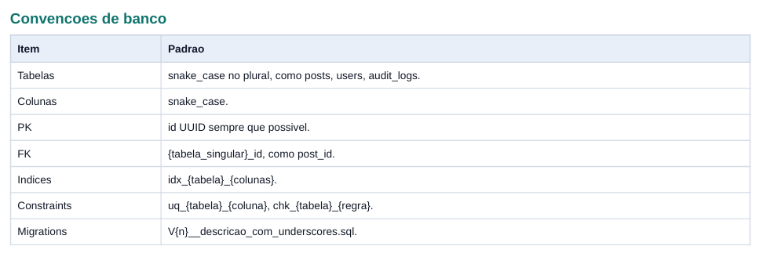
Visual original da página 12 do PDF.
Página 13
Transcrição integral + visual original
Transcrição da página 13
10. API REST e Contratos
A API deve seguir REST com versionamento por URL, padrao uniforme de erros, idempotencia em operacoes criticas e documentacao OpenAPI.
Dominio
Endpoints principais
Auth
POST /api/v1/auth/register, /login, /refresh, /logout, /forgot-password, /reset-password, GET /me
Posts publicos
GET /api/v1/posts, /posts/{slug}, /posts/featured, /posts/recent, /posts/search, /posts/{slug}/related
Posts admin
POST /api/v1/admin/posts, PUT /admin/posts/{id}, PATCH /publish, PATCH /archive, DELETE /admin/posts/{id}
Categorias e tags
GET /categories, GET /tags, POST/PUT/DELETE /api/v1/admin/categories, /api/v1/admin/tags
Comunidade
GET/POST /posts/{postId}/comments, PATCH /admin/comments/{id}/approve, /reject, POST/DELETE /like, /favorite
Newsletter
POST /newsletter/subscribe, /confirm, /unsubscribe, POST /admin/newsletter/campaigns/{id}/send
Produtos e premium
GET /products, GET /products/{slug}, POST /checkout, GET /me/purchases, GET /me/subscription
Pagamentos
POST /api/v1/webhooks/payments, POST /admin/purchases/{id}/refund
Uploads
GET /admin/uploads/presigned-url, POST /admin/uploads/confirm, DELETE /admin/uploads/{id}
Analytics/admin
POST /analytics/events, GET /admin/analytics/overview, /posts, /revenue, GET /admin/audit-logs, POST /admin/settings
Sistema
GET /health, GET /feed.xml, GET /sitemap.xml, GET /robots.txt
Padrao de erro - RFC 7807
{
"type": "https://api.seusite.com.br/errors/post-not-found",
"title": "Post nao encontrado",
"status": 404,
"detail": "Nenhum post com slug informado foi encontrado",
"instance": "/api/v1/posts/spring-boot-xyz",
"timestamp": "2026-05-22T10:30:00Z",
"traceId": "abc123def456"
}
Regras de API
Versionamento: /api/v1, com deprecacao de 12 meses apos uma v2.
Erros uniformes com traceId.
Idempotencia em like, bookmark, subscribe e webhooks.
Paginacao por cursor para grandes volumes.
Swagger/OpenAPI sempre atualizado no pipeline.
•
•
•
•
•
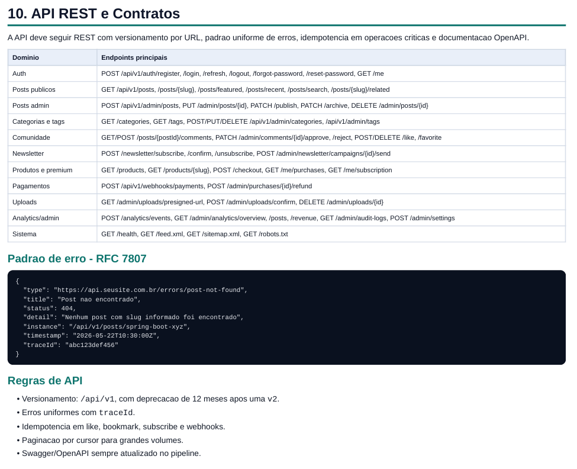
Visual original da página 13 do PDF.
Página 14
Transcrição integral + visual original
Transcrição da página 14
11. Cache, Busca e Performance
Redis deve ser usado para reduzir carga do banco, controlar taxa, armazenar locks temporarios e acelerar leituras publicas. PostgreSQL Full Text Search
atende o MVP; Meilisearch/OpenSearch entram somente se as metricas justificarem.
Fluxo de cache-aside com lock para evitar cache stampede.
Chaves e estrategias Redis
Chave
Uso
TTL
blog:posts:list:*
Listagens publicas de posts
5 a 15 min
blog:posts:detail:{slug}
Detalhe do post
30 a 60 min
blog:categories:* / blog:tags:*
Categorias e tags
1 a 6 h
rate-limit:{ip}:{endpoint}
Rate limiting publico
janela movel
lock:post:{slug}
Evitar cache stampede
5 s
analytics:views:{postId}
Contador temporario de views
flush periodico
Quando migrar busca para Meilisearch/OpenSearch
Mais de 500 artigos.
Reclamacoes de resultados irrelevantes.
Necessidade de facets por tag, categoria e data simultaneamente.
Necessidade de typo tolerance e ranking mais sofisticado.
Cliente
Posts API
GET /posts/slug
Redis Cache
post:slug, listagens
cache lookup
set TTL
Mutex lock
lock:post:slug
se miss, lock 5s
hit
PostgreSQL
apenas 1 request
fresh data
PostUpdatedEvent
eviction
evict blog:posts:*
•
•
•
•
Visual original da página 14 do PDF.
Página 15
Transcrição integral + visual original
Transcrição da página 15
12. DevOps, Infraestrutura e Deploy
O processo de entrega deve ter ambientes separados, quality gates automatizados, deploy verificavel, rollback e migrations seguras.
Pipeline de desenvolvimento, staging e producao.
Ambiente local com Docker Compose
services:
postgres:
image: postgres:16
environment:
POSTGRES_DB: blogdb
POSTGRES_USER: bloguser
POSTGRES_PASSWORD: blogpass
ports: ["5432:5432"]
volumes:
- postgres_data:/var/lib/postgresql/data
- ./scripts/db/seed.sql:/docker-entrypoint-initdb.d/99-seed.sql
redis:
image: redis:7
ports: ["6379:6379"]
pgadmin:
image: dpage/pgadmin4:latest
environment:
PGADMIN_DEFAULT_EMAIL: admin@dev.local
PGADMIN_DEFAULT_PASSWORD: admin123
ports: ["5050:80"]
Estrategia de deploy
Fluxo: feature branch -> Pull Request -> CI -> staging -> main -> producao.
Frontend: Vercel com preview deploys e production deploy.
Backend: Render, Railway, Fly.io, AWS, Azure ou VPS com Docker.
Banco: PostgreSQL gerenciado separado por ambiente.
Redis: servico gerenciado em producao.
Migrations: expand-contract para zero downtime.
Rollback: redeploy do ultimo container funcional e migration de compensacao quando necessario.
Zero downtime
O novo container so deve receber trafego depois de passar readiness/liveness. Migrations destrutivas nunca devem rodar junto com codigo antigo.
GitHub
feature branch
Pull Request
review + checks
GitHub Actions
build, tests, lint
Quality Gates
Sonar, Trivy, Lighthouse
Staging
develop -> staging
Vercel
frontend production
Backend runtime
Render/Railway/AWS/Azure
Sentry + Uptime + Grafana
alertas
Managed PostgreSQL
Flyway expand-contract
•
•
•
•
•
•
•
Visual original da página 15 do PDF.
Página 16
Transcrição integral + visual original
Transcrição da página 16
13. Observabilidade, Testes e Qualidade
Observabilidade
Item
Aplicacao
Logs estruturados
JSON com traceId, userId quando aplicavel e sem tokens/senhas.
Actuator/Micrometer
Health, readiness, liveness, JVM, HTTP e metricas customizadas.
Sentry
Captura de erros frontend e backend.
Prometheus/Grafana
Metricas e dashboards em fase de escala.
Uptime Robot
Monitorar /health a cada 5 minutos.
Audit trail
Registro imutavel de acoes administrativas.
Testes
Tipo
Ferramentas
Escopo
Unitarios
JUnit 5, Mockito
Services, validators, mappers, regras de dominio.
Integracao
Testcontainers
PostgreSQL, Redis, Flyway e repositories reais.
API
RestAssured, MockMvc
Contratos REST, seguranca, status codes e payloads.
Externos
WireMock
Stripe, Resend, storage e OAuth.
E2E
Playwright
Login, CRUD post, comentarios, checkout e admin.
Carga
k6
p95, throughput, saturacao e regressao de performance.
Definition of Done
Codigo revisado e com checklist de seguranca.
Testes unitarios e/ou integracao escritos.
Cobertura de novo codigo >= 70%.
Sem warnings no console do browser.
Responsivo em 375px, 768px e 1280px.
Documentacao OpenAPI atualizada.
Migration Flyway versionada.
Staging validado antes da producao.
•
•
•
•
•
•
•
•
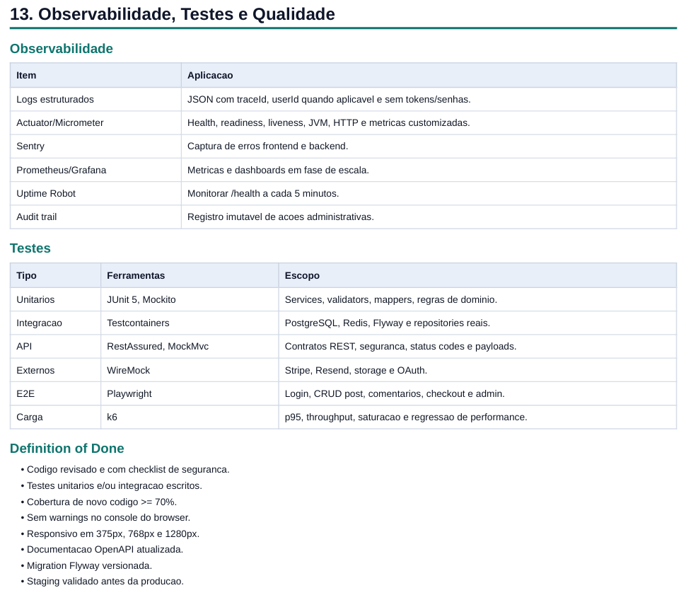
Visual original da página 16 do PDF.
Página 17
Transcrição integral + visual original
Transcrição da página 17
14. Requisitos Funcionais
Os requisitos abaixo consolidam a versao completa da plataforma com backend, incluindo as melhorias adicionadas ao documento tecnico.
Codigo
Modulo
Descricao
Prioridade
Fase
RF01
Cadastro de usuarios
Permitir criacao de conta com nome, e-mail, senha, aceite de termos e status de verificacao.
Must Have
MVP / Fase 1-2
RF02
Login
Permitir autenticacao por e-mail e senha com geracao de access token e refresh token.
Must Have
MVP / Fase 1-2
RF03
Refresh token e logout
Renovar sessao com refresh token rotativo e revogar tokens no logout.
Must Have
MVP / Fase 1-2
RF04
Recuperacao de senha
Gerar token temporario e enviar link seguro de redefinicao de senha por e-mail.
Must Have
MVP / Fase 1-2
RF05
Perfil do usuario
Permitir editar nome, avatar, senha, favoritos, historico, compras e assinatura.
Must Have
MVP / Fase 1-2
RF06
Gestao de usuarios
Permitir ao admin listar, bloquear, alterar roles e auditar usuarios.
Must Have
MVP / Fase 1-2
RF07
Criacao de posts
Permitir criar posts com titulo, slug, descricao, conteudo, imagem, categoria, tags e SEO.
Must Have
MVP / Fase 1-2
RF08
Edicao e arquivamento de posts
Permitir editar, publicar, arquivar, deletar logicamente e restaurar posts.
Must Have
MVP / Fase 1-2
RF09
Publicacao agendada
Permitir agendar posts e publicar automaticamente por job backend.
Must Have
MVP / Fase 1-2
RF10
Editor Markdown/MDX
Permitir escrever conteudo tecnico com markdown, blocos de codigo, tabelas e componentes seguros.
Must Have
MVP / Fase 1-2
RF11
Listagem publica de posts
Exibir posts publicados com paginacao, ordenacao, filtros por categoria e tag.
Should Have
Fase 2-3
RF12
Pagina individual do post
Exibir titulo, descricao, autor, datas, sumario, conteudo, tags, comentarios e relacionados.
Should Have
Fase 2-3
RF13
Categorias
Permitir CRUD de categorias com nome, slug, descricao e status.
Should Have
Fase 2-3
RF14
Tags
Permitir CRUD de tags com nome, slug e contagem de posts relacionados.
Must Have
MVP / Fase 1-2
RF15
Series de estudo
Permitir agrupar posts em series com ordem, descricao e progresso de leitura.
Must Have
MVP / Fase 1-2
RF16
Projetos de portfolio
Exibir projetos com stack, problema, arquitetura, link GitHub, deploy e aprendizados.
Must Have
MVP / Fase 1-2
RF17
Busca textual
Permitir busca por titulo, descricao, conteudo, tags, categorias e autor.
Must Have
MVP / Fase 1-2
RF18
Comentarios
Permitir comentar posts mediante autenticacao, com status de moderacao.
Must Have
MVP / Fase 1-2
RF19
Moderacao de comentarios
Permitir aprovar, rejeitar, editar ou remover comentarios pelo painel admin.
Must Have
MVP / Fase 1-2
RF20
Respostas em comentarios
Permitir respostas com limite de profundidade para manter legibilidade.
Should Have
Fase 2-3
RF21
Curtidas e reacoes
Permitir uma reacao por usuario/post/tipo com operacao idempotente.
Should Have
Fase 2-3
RF22
Favoritos
Permitir salvar posts para ler depois e listar favoritos na area do usuario.
Should Have
Fase 2-3
RF23
Historico de leitura
Registrar posts lidos, progresso, tempo gasto e ultimo acesso.
Should Have
Fase 2-3
RF24
Leitura completada
Disparar evento de conclusao quando o leitor atingir criterio de progresso configurado.
Should Have
Fase 2-3
RF25
Newsletter double opt-in
Permitir inscricao, confirmacao, cancelamento e armazenamento de origem.
Should Have
Fase 2-3
RF26
Campanhas de newsletter
Permitir criar, agendar, enviar e medir campanhas para assinantes.
Should Have
Fase 2-3
RF27
Segmentacao de newsletter
Permitir segmentar assinantes por interesse, tags ou comportamento.
Must Have
MVP / Fase 1-2
RF28
Dashboard administrativo
Exibir posts, usuarios, comentarios, assinantes, views, receita e alertas.
Must Have
MVP / Fase 1-2
RF29
Analytics interno
Registrar page views, UTM, origem, tempo de leitura, conversoes e eventos.
Must Have
MVP / Fase 1-2
RF30
Produtos digitais
Permitir cadastrar, publicar, vender e liberar produtos digitais.
Must Have
MVP / Fase 1-2
RF31
Checkout de pagamentos
Integrar com gateway para compra unica e assinatura.
Nice to Have
Fase 3
RF32
Webhooks de pagamento
Receber webhooks assinados e idempotentes para confirmar pagamentos.
Should Have
Fase 2-3
RF33
Area premium
Restringir acesso a conteudos e downloads para assinantes ou compradores.
Should Have
Fase 2-3
RF34
Downloads privados
Liberar arquivos por URL assinada e expirada apos compra confirmada.
Should Have
Fase 2-3
RF35
Upload de imagens e arquivos
Permitir upload de capas, imagens internas, anexos e arquivos de produto.
Should Have
Fase 2-3
RF36
Presigned URLs
Permitir upload direto ao storage por URL assinada com TTL curto.
Future
Fase 4+
RF37
Notificacoes
Enviar notificacoes por e-mail ou canal interno para eventos relevantes.
Future
Fase 4+
RF38
Configuracoes dinamicas
Permitir ativar/desativar comentarios, cadastro, manutencao e features sem redeploy.
Future
Fase 4+
RF39
Audit logs
Registrar acoes sensiveis do admin com antes/depois, IP, usuario e timestamp.
Future
Fase 4+
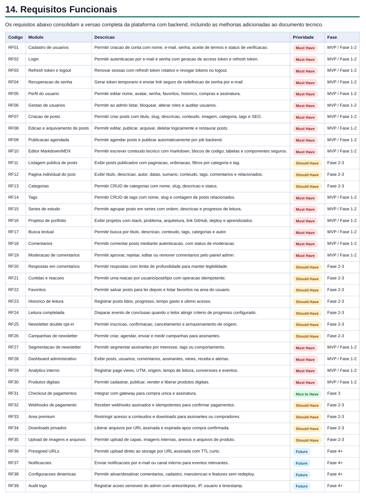
Visual original da página 17 do PDF.
Página 18
Transcrição integral + visual original
Transcrição da página 18
Codigo
Modulo
Descricao
Prioridade
Fase
RF40
SEO dinamico
Gerar metadata, canonical, JSON-LD, breadcrumbs e Open Graph por post.
Future
Fase 4+
RF41
Sitemap e robots
Gerar sitemap.xml e robots.txt automaticamente a partir do conteudo publicado.
Must Have
MVP / Fase 1-2
RF42
Open Graph image dinamica
Gerar imagem social por post com titulo, data e identidade visual.
Must Have
MVP / Fase 1-2
RF43
Documentacao OpenAPI
Expor Swagger/OpenAPI com schemas, exemplos, erros e seguranca.
Must Have
MVP / Fase 1-2
RF44
Health check
Expor endpoint de saude publico simplificado e probes de liveness/readiness.
Must Have
MVP / Fase 1-2
RF45
Modo de manutencao
O sistema deve suportar modo de manutencao com pagina de aviso aos visitantes.
Should Have
Fase 2+
RF46
Redirecionamentos
O sistema deve permitir criar redirecionamentos de URLs, como /go/github para link externo.
Should Have
Fase 2+
RF47
RSS Feed
O sistema deve gerar RSS Feed (/feed.xml) atualizado automaticamente com novos posts.
Should Have
Fase 2+
RF48
Exclusao de conta
O sistema deve suportar exclusao de conta pelo proprio usuario conforme LGPD.
Should Have
Fase 2+
RF49
Paginacao por cursor
O sistema deve implementar paginacao baseada em cursor para o endpoint de posts.
Should Have
Fase 2+
RF50
Exportacao de dados
O sistema deve suportar exportacao de dados do usuario em formato JSON para portabilidade LGPD.
Should Have
Fase 2+
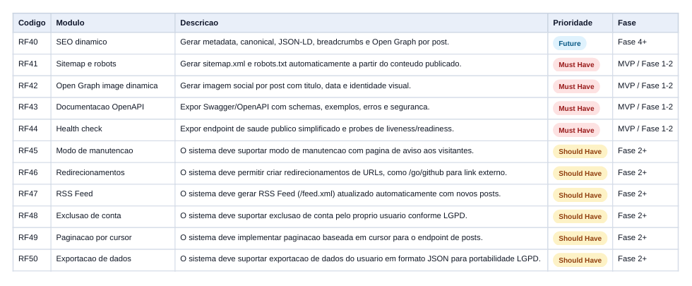
Visual original da página 18 do PDF.
Página 19
Transcrição integral + visual original
Transcrição da página 19
15. Requisitos Nao Funcionais
Os requisitos nao funcionais garantem qualidade operacional, seguranca, escalabilidade, observabilidade, manutencao e validacao objetiva.
Codigo
Categoria
Descricao
Como validar
RNF01
Performance
LCP das paginas publicas deve ser inferior a 2.5s em conexao padrao.
Lighthouse CI
RNF02
Performance
Latencia p95 da API deve permanecer abaixo de 300ms em endpoints de leitura cacheados.
k6 + Actuator metrics
RNF03
Escalabilidade
API deve suportar pelo menos 500 req/s em leitura publica com cache habilitado.
k6 100 VUs por 30s
RNF04
Disponibilidade
Servicos publicos devem manter uptime minimo de 99.5% no MVP.
Uptime monitoring
RNF05
Escalabilidade
Backend deve ser stateless e escalar horizontalmente sem sessao local.
Review de arquitetura
RNF06
Seguranca
Senhas devem ser armazenadas apenas com hash BCrypt e salt.
Teste e code review
RNF07
Seguranca
CORS e CSRF devem restringir origens e proteger cookies sensiveis.
Teste de seguranca
RNF08
Auditoria
Acoes administrativas devem ser rastreaveis por usuario, acao, entidade e timestamp.
Consulta audit_logs
RNF09
Observabilidade
Todas as requisicoes devem ter traceId e logs estruturados.
Logs JSON + Sentry
RNF10
Manutenibilidade
Codigo deve seguir camadas e modulos com baixa dependencia circular.
Arquitetura + lint
RNF11
Qualidade
Cobertura minima de testes do novo codigo deve ser >= 70%.
JaCoCo/Istanbul
RNF12
Acessibilidade
Paginas publicas devem atingir score >= 90 em acessibilidade.
axe-core + Playwright
RNF13
SEO
Paginas publicas devem ser indexaveis com metadados, sitemap e schema.
Lighthouse SEO + Search Console
RNF14
Integridade
Banco deve usar constraints, FKs, unique indexes e migrations versionadas.
Flyway + tests
RNF15
Resiliencia
Falhas em Redis, storage, e-mail ou pagamento devem degradar sem derrubar o blog.
Testes de falha
RNF16
Idempotencia
Operacoes criticas como subscribe, like e webhook devem ser idempotentes.
Testes de repeticao
RNF17
Privacidade
Dados pessoais devem ter consentimento, exportacao, exclusao e minimizacao.
Checklist LGPD
RNF18
Migracoes
Mudancas de schema devem seguir expand-contract para evitar downtime.
Revisao de migration
RNF19
Deploy
Deploy de producao deve usar health checks e rollback possivel.
Pipeline + health probes
RNF20
Responsividade
Interface deve funcionar em 375px, 768px e 1280px sem quebra visual.
Playwright visual/manual
RNF21
Recuperacao
Backup automatico do banco com retencao de 7 dias e RPO maximo de 24h.
Teste de restore
RNF22
Recuperacao
RTO maximo apos falha critica deve ser de 2 horas.
Simulado de desastre
RNF23
Seguranca
Implementar Content Security Policy (CSP) headers em todas as respostas.
Security headers scan
RNF24
Seguranca
Headers obrigatorios: Strict-Transport-Security, X-Frame-Options, X-Content-Type-Options.
Security headers scan
RNF25
Performance
Imagens devem ser servidas em WebP com srcset responsivo e CLS < 0.1.
Lighthouse CI
RNF26
Auditoria
Acoes sensiveis do admin devem ser registradas em log de auditoria imutavel.
Consulta audit_logs
RNF27
Resiliencia
A API deve implementar Circuit Breaker para Stripe, Resend e servicos externos.
Resilience4j tests
RNF28
Internacionalizacao
Arquitetura deve suportar futura i18n sem refactoring estrutural.
Review de rotas/content
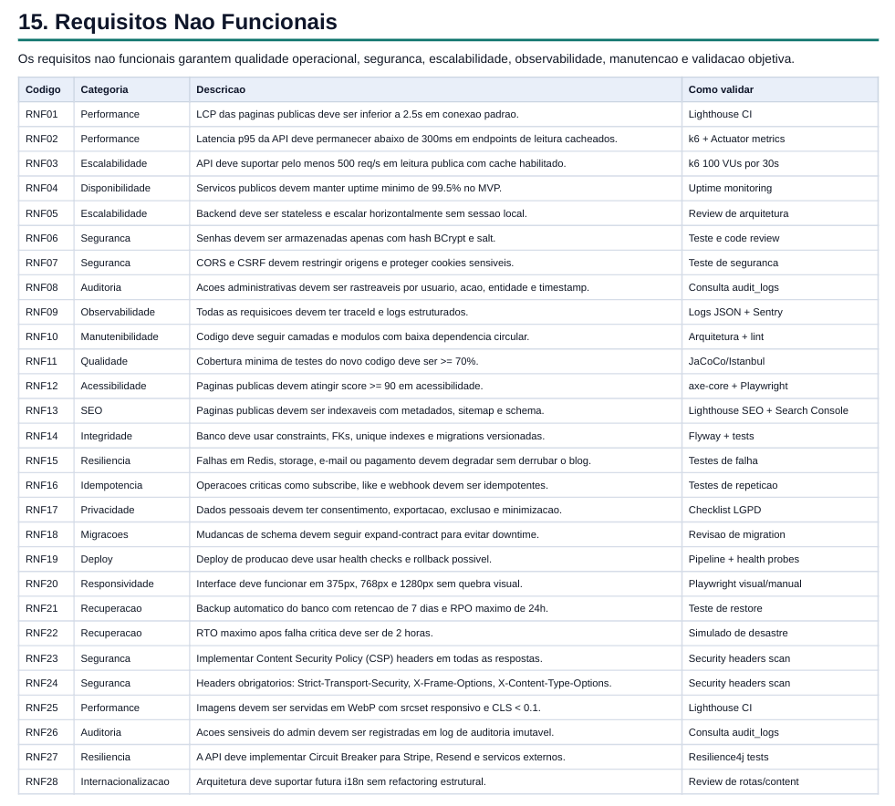
Visual original da página 19 do PDF.
Página 20
Transcrição integral + visual original
Transcrição da página 20
16. Processo de Desenvolvimento em 8 Fases
As fases abaixo foram extraidas da trilha do HTML anexado e adaptadas para o processo real de construcao da plataforma. Cada fase possui foco,
entregaveis do blog e criterio de saida.
Fase 1 - Base técnica + fundamentos
Sem 1–8 - 896h planejadas
Entregaveis de projeto:
Repositório público: README inglês, Conventional Commits, estrutura modular
Modelagem banco: users, posts, categories, tags, comments (Flyway)
Auth: JWT + refresh token rotation + Spring Security 6 + BCrypt
Posts CRUD: criar, editar, publicar, rascunho, markdown, slug, SEO fields
Categorias + tags: CRUD, relação N:N, slugs únicos
Testes unitários services, mappers, validators (>80%)
Swagger/OpenAPI com exemplos e schemas
Suporte tecnico da fase: Java 21 Core: tipos, OOP, herança, polimorfismo, interfaces, generics, records, sealed classes; Linux: terminal, comandos
essenciais, permissões chmod/chown; AWS: CLF-C02 — Cloud Practitioner.
Criterio de saida: MVP operacional com auth, posts, categorias, tags, Swagger, testes e pelo menos 5 posts publicados.
Fase 2 - Desenvolvimento profissional
Sem 9–16 - 896h planejadas
Entregaveis de projeto:
Comentários: threaded com reply, moderação
Newsletter: double opt-in, confirmação, preferências
Busca full-text: PostgreSQL tsvector + tsquery
Admin panel API: gestão de usuários, posts, moderação
Redis: cache posts populares, rate limiting por IP
Testes integração: Testcontainers, MockMvc + security
Swagger atualizado com todos os endpoints + erros
Suporte tecnico da fase: Spring Boot 3 avançado: REST, validação, DTOs, mappers MapStruct; Docker: images, containers, Dockerfile, build, layers,
cache; AWS: SAA-C03 — Solutions Architect (início).
Criterio de saida: Comunidade inicial: comentarios moderados, newsletter funcional, busca FTS, admin e Redis.
Fase 3 - Engenharia de software real
Sem 17–24 - 896h planejadas
Entregaveis de projeto:
Refatoração hexagonal: domain / ports / adapters
DDD: Post com comportamento, Slug Value Object, Domain Events
Kafka: PostPublished → email + notification + analytics
OAuth2 social login: GitHub + Google
OWASP hardening: XSS, CSRF, CORS, security headers
ADRs: hexagonal vs layered, Kafka vs RabbitMQ
Moderação assíncrona via Kafka
Suporte tecnico da fase: Kafka: produtores, consumidores, DLQ, retry, schemas; CI/CD: GitHub Actions (build → test → Sonar → deploy); AWS:
SAA-C03 (continuação).
Criterio de saida: Arquitetura evoluida: hexagonal/DDD, eventos, Kafka/OAuth e hardening OWASP documentado.
•
•
•
•
•
•
•
•
•
•
•
•
•
•
•
•
•
•
•
•
•
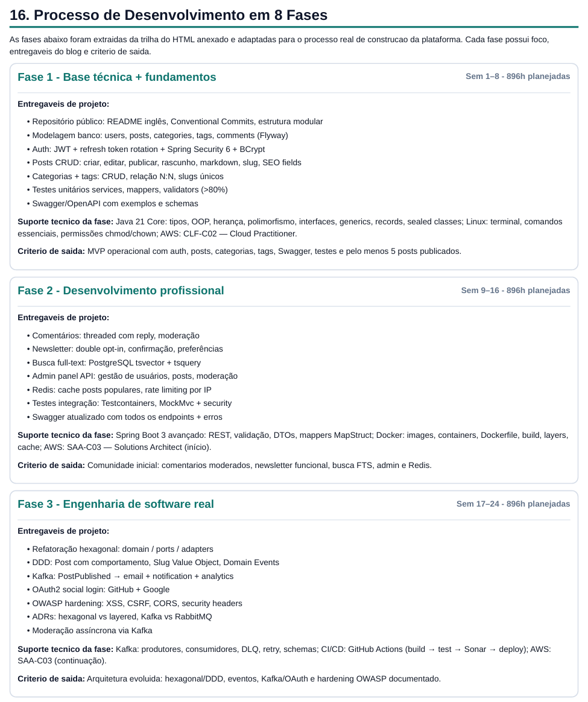
Visual original da página 20 do PDF.
Página 21
Transcrição integral + visual original
Transcrição da página 21
Fase 4 - Arquitetura + candidaturas
Sem 25–32 - 896h planejadas
Entregaveis de projeto:
Rate limiting granular: IP, usuário, endpoint com Redis
Email assíncrono: Thymeleaf + Kafka → email-worker
Paginação cursor-based para feeds de posts
Versionamento de API: v1/v2 com strategy pattern
OpenAPI Generator: SDK client em Python
Métricas: SonarQube integrado, dashboard cobertura
Moderação inteligente: filtro spam + fila aprovação
Suporte tecnico da fase: Spring Boot avançado: profiles, starters customizados, Actuator; Kubernetes: pods, deployments, services, namespaces,
kubectl; AWS: SAA-C03 (prova) + DVA-C02 (início).
Criterio de saida: Performance e contratos: rate limit, e-mail assincrono, cursor pagination, API versionada e Sonar.
Fase 5 - Cloud + sistemas distribuídos
Sem 33–40 - 896h planejadas
Entregaveis de projeto:
Deploy AWS: EKS + RDS Multi-AZ + ElastiCache + S3 + CloudFront
OpenTelemetry: trace ponta a ponta com correlation ID
Analytics: page views, tempo leitura, trending, funil
RSS + Atom + sitemap.xml + meta og/twitter + JSON-LD
Terraform: VPC, EKS, RDS, S3, CloudFront, Route 53 como código
SRE: health checks, alertas CloudWatch, SLO 99.9%
Feature flags: deploy sem risco, A/B testing
Suporte tecnico da fase: AWS aplicado: EKS, RDS, ElastiCache, S3, CloudFront, SQS/SNS; K8s avançado: Helm charts, values.yaml, chart repos;
AWS: DVA-C02 — Developer Associate (cont.).
Criterio de saida: Cloud e escala: deploy AWS, observabilidade, Terraform, SRE, feeds, sitemap e analytics.
Fase 6 - IA aplicada + RAG + agentes
Sem 41–48 - 896h planejadas
Entregaveis de projeto:
pgvector: embeddings posts para busca semântica
Posts relacionados via RAG: similaridade semântica
Auto-tagging: LLM sugere tags com confidence score
Agente blog: chat RAG com citação de fontes
Sugestão SEO: LLM gera títulos, meta description
LLMOps: painel custo IA, latência, avaliação
Cache inteligente: embeddings pré-computados
Suporte tecnico da fase: Embeddings e pgvector: indexação HNSW, cosine similarity; Terraform avançado: import, lifecycle, data sources, for_each;
AWS: DVA-C02 (prova) + revisão.
Criterio de saida: IA aplicada: busca semantica, RAG, auto-tagging, agente do blog e painel LLMOps.
•
•
•
•
•
•
•
•
•
•
•
•
•
•
•
•
•
•
•
•
•
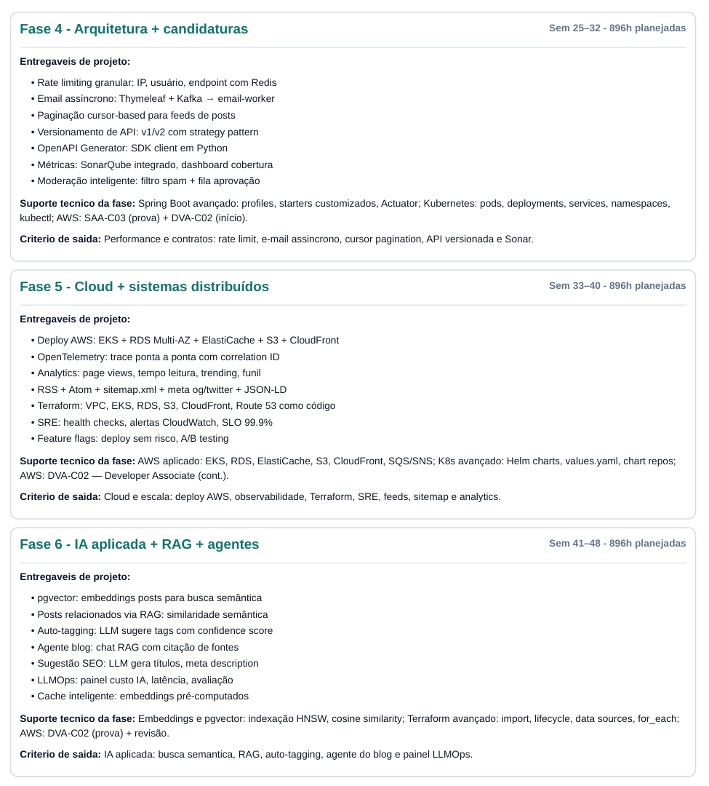
Visual original da página 21 do PDF.
Página 22
Transcrição integral + visual original
Transcrição da página 22
Fase 7 - Produto + frontend + escala
Sem 49–56 - 896h planejadas
Entregaveis de projeto:
Frontend Next.js 15: App Router, SSG, ISR, server components
Design system: shadcn/ui + Tailwind, dark mode, tokens
Acessibilidade: WCAG 2.1 AA, aria-labels, keyboard nav
Performance: Lighthouse > 90, WebP, code splitting, lazy load
PWA: service worker, manifest.json, offline reading
Analytics frontend: scroll depth, click events, conversão
i18n: suporte pt-BR e en-US com next-intl
Suporte tecnico da fase: Produto completo: arquitetura end-to-end, diagramas C4; GitOps: ArgoCD, sync policies, auto-sync, rollback; AWS: SOA-
C02 ou revisão avançada.
Criterio de saida: Produto refinado: Next.js completo, design system, acessibilidade, PWA, i18n e analytics frontend.
Fase 8 - Portfólio final + negociação
Sem 57–64 - 896h planejadas
Entregaveis de projeto:
Launch: pentest OWASP ZAP, performance audit, SEO, a11y
Domínio próprio + SSL ACM + CloudFront + Route 53
10+ posts técnicos: ADRs públicos, comparações, tutoriais
Vídeo apresentação (15-20min): arquitetura, decisões
Case study: MVP ao produto com IA em produção
Blog como portfólio vivo: posts = competências
Suporte tecnico da fase: System design: sharding, replication, caching, CDN, queues; Infrastructure review: audit completo infra blog; AWS: Revisão
+ planejamento avançado.
Criterio de saida: Lancamento: pentest, dominio, SSL, SEO, 10+ posts, video tecnico e case study completo.
•
•
•
•
•
•
•
•
•
•
•
•
•
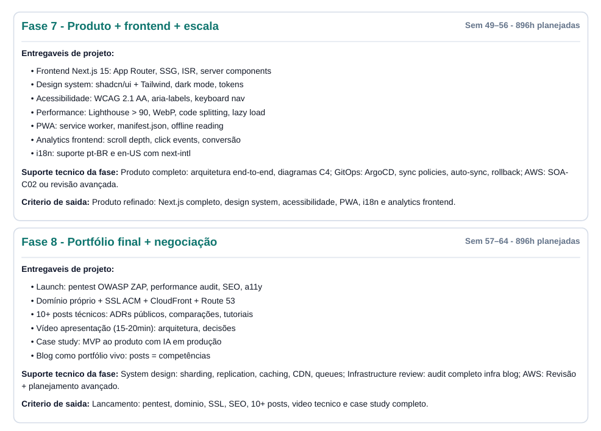
Visual original da página 22 do PDF.
Página 23
Transcrição integral + visual original
Transcrição da página 23
17. Priorizacao Recomendada
MVP obrigatorio
Auth com JWT e refresh token.
CRUD de posts, categorias e tags.
Admin basico.
SEO, sitemap, robots e RSS.
PostgreSQL, Flyway, Redis basico.
Swagger/OpenAPI e testes essenciais.
Deploy frontend/backend em staging e producao.
Depois do MVP
Comentarios, favoritos e historico.
Newsletter com campanhas.
Analytics interno.
Produtos digitais e checkout.
Area premium.
RAG, auto-tagging e agente do blog.
i18n, PWA e features avancadas.
Criterio para parar de adicionar features
Se os ultimos 5 posts nao foram publicados, foque em conteudo.
Se a newsletter nao tem 100 assinantes, foque em SEO e distribuicao.
Se existe bug critico aberto ha mais de 7 dias, corrija antes de evoluir escopo.
Se Lighthouse esta abaixo de 90, fortaleça a base antes de adicionar complexidade.
•
•
•
•
•
•
•
•
•
•
•
•
•
•
•
•
•
•
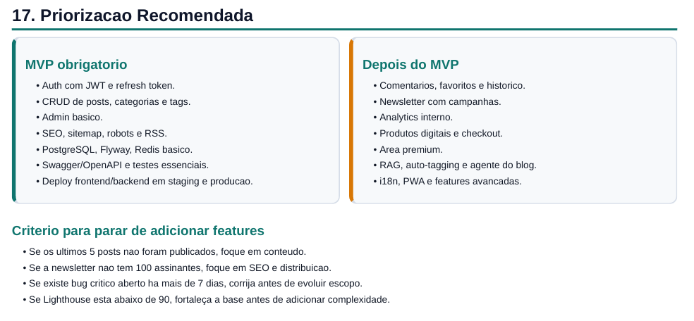
Visual original da página 23 do PDF.
Página 24
Transcrição integral + visual original
Transcrição da página 24
18. Melhorias, Riscos e Decisoes Pendentes
Melhorias tecnicas recomendadas
Tema
Melhoria
Documentacao
Criar ADRs, CHANGELOG.md e runbooks operacionais.
Arquitetura
Adicionar DFD, C4, trust boundaries e estrategia de fallback.
Banco
Adicionar audit_logs, refresh_tokens, soft delete, indices compostos e particionamento de page_views.
API
Padronizar erros RFC 7807, cursor pagination, idempotencia e versionamento.
Frontend
Documentar estrategia de renderizacao, middleware, error boundaries e config central.
Seguranca
Armazenamento seguro do token, refresh rotation, rate limit, CSP e validacao de arquivos.
Cache
Cache warming, mutex lock e eviction por prefixo/tag.
SEO
Lighthouse CI, breadcrumb schema, canonical para paginacao e OG dinamico.
Newsletter
Segmentacao, tratamento de bounce/spam e metricas de saude da lista.
Pagamentos
Webhook idempotente, reembolso, nota fiscal/compliance fiscal e hardening antes de monetizar.
Riscos principais
Risco
Mitigacao
Escopo grande demais para
MVP
Comecar com auth, posts, categorias, tags, admin, SEO e deploy. Deixar premium, pagamentos e IA para fases
futuras.
Baixa producao de conteudo
Regra de produto: se nao houver 5 posts recentes, priorizar conteudo antes de novas features.
Complexidade de pagamentos
Adicionar fase de hardening, webhooks idempotentes, reembolso e compliance fiscal antes de monetizar.
Custos de infraestrutura
Iniciar com servicos gerenciados de baixo custo e migrar apenas quando metricas justificarem.
Seguranca de usuarios
Usar JWT curto, refresh token rotativo, HttpOnly cookie, rate limit e audit logs.
Dados pessoais e LGPD
Incluir exportacao, exclusao de conta, consentimento, minimizacao e politicas desde o inicio.
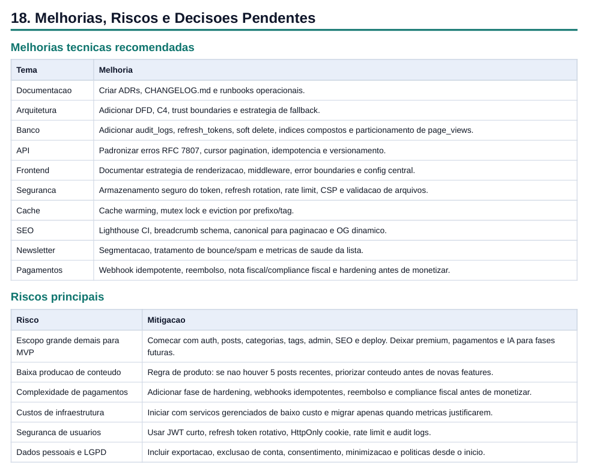
Visual original da página 24 do PDF.
Página 25
Transcrição integral + visual original
Transcrição da página 25
19. Mapa de Conhecimento de Engenharia Coberto
O projeto funciona como portfolio tecnico porque cobre varias competencias de engenharia moderna. Cada modulo implementado pode virar artigo, estudo
de caso ou demonstracao em entrevista.
Area
Conteudos cobertos
Profundidade
Arquitetura de Software
Monolito modular, DDD basico, C4, ACL, events, ADRs, expand-contract, feature flags.
Alta
Backend Java/Spring
Java 21, Spring Boot, Security, JPA, Cache, Events, Actuator, Resilience4j, Flyway.
Alta
Banco de Dados
PostgreSQL, UUID, JSONB, FTS, indices, constraints, particionamento, query tuning.
Alta
Cache e Performance
Redis, cache-aside, TTL, warming, stampede prevention, rate limiting.
Alta
Seguranca
JWT, BCrypt, cookies HttpOnly, CSP, CORS, CSRF, OWASP, LGPD, webhooks assinados.
Alta
API Design
REST, versionamento, RFC 7807, idempotencia, paginacao, OpenAPI, status codes.
Alta
Frontend
Next.js App Router, SSR, SSG, ISR, RSC, forms, error boundaries, middleware, Web Vitals.
Alta
DevOps
Docker, CI/CD, IaC futuro, health checks, staging, rollback, zero downtime.
Media-Alta
Observabilidade
Logs estruturados, traceId, Actuator, Micrometer, Sentry, Prometheus, Grafana.
Media
Testes
JUnit, Mockito, Testcontainers, RestAssured, WireMock, Playwright, k6, JaCoCo.
Media-Alta
Produto e Monetizacao
Newsletter, funis, produtos digitais, area premium, pagamentos, analytics.
Media
Conclusao: se construida e documentada com consistencia, esta plataforma cobre praticamente toda a trilha de um desenvolvedor backend forte
com base full stack, cloud, DevOps, seguranca, dados, produto e IA aplicada.
Documento gerado para consolidar o processo de desenvolvimento, arquitetura, requisitos e fases da Plataforma de Blog Tecnico Pessoal.
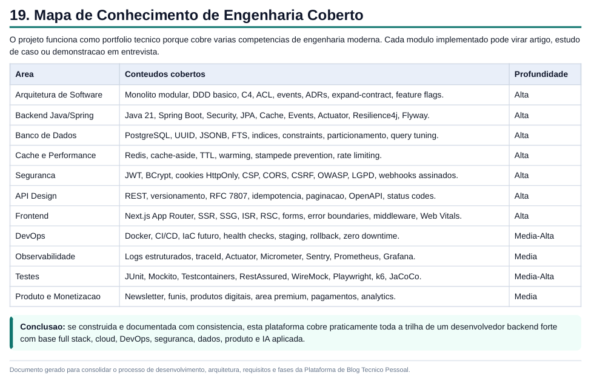
Visual original da página 25 do PDF.
Referências internas da página
Referências
PDF incorporado: blog-tecnico-processo-arquitetura-requisitos.pdf.
HTML base: página de trilha trilhas/blog.html do Plano Integrado de Estudos.